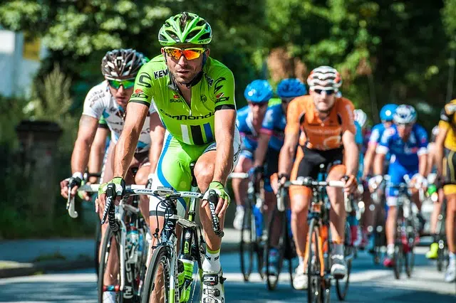
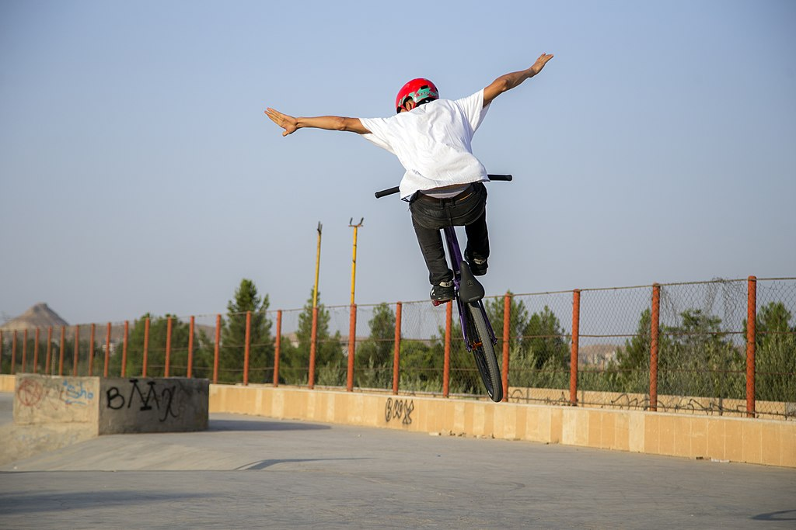
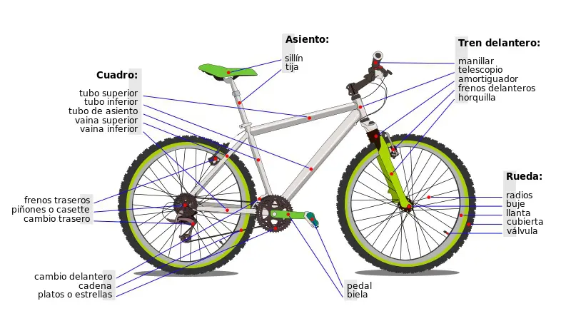

Ciclismo de ruta
El ciclismo de ruta es una de las disciplinas más populares del ciclismo. Se practica en carreteras y consiste en recorrer una distancia determinada en el menor tiempo posible. Los ciclistas suelen competir en equipos y deben enfrentar diferentes tipos de terreno y condiciones climáticas.
Ciclismo de bmx
Las carreras de BMX son un tipo de ciclismo que consiste en correr con bicicletas BMX en pistas apropiadas ya sean estas de tierra o pavimento. Las carreras de BMX de velocidad son conocidas como BICI Cross para competir contra otros.
¿Como esta conformada una bicicleta?
Cuadro: es la estructura que sostiene todas las demás partes de la bici Horquilla: es la pieza en forma de U a la que se fija la rueda delantera y la une con el cuadro Suspensión: es una pieza opcional que equipan algunas bicicletas de montaña para que el eje trasero de la bicicleta no sea rígido y pueda absorber las irregularidades del terreno Ruedas: son los elementos que unen la bicicleta con el suelo y le permiten desplazarse Manillar: es la pieza que permite controlar la dirección de la rueda delantera y donde se suelen encontrar los frenos y los cambios de marchas Frenos: es el sistema que permite detener el desplazamiento de la bicicleta mediante el accionamiento manual de unas palancas Transmisión: es el sistema que permite al ciclista convertir la fuerza de sus piernas en capacidad de movimiento para la bicicleta Sillín: la parte de la bicicleta donde se sienta el ciclista Sistema eléctrico: es el sistema que equipan las bicicletas eléctricas para generar movimiento a partir de electricidad
